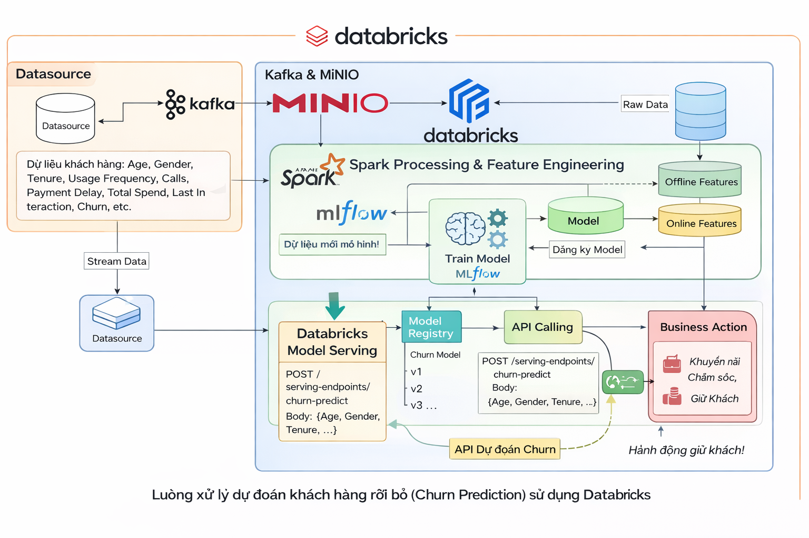
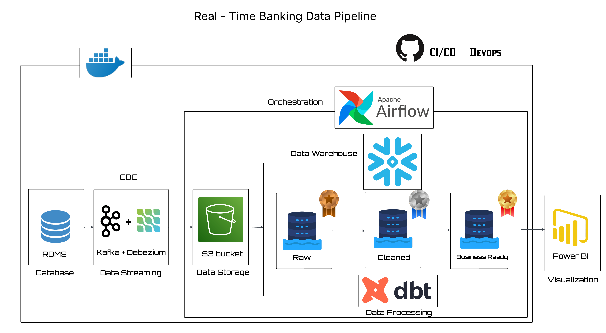
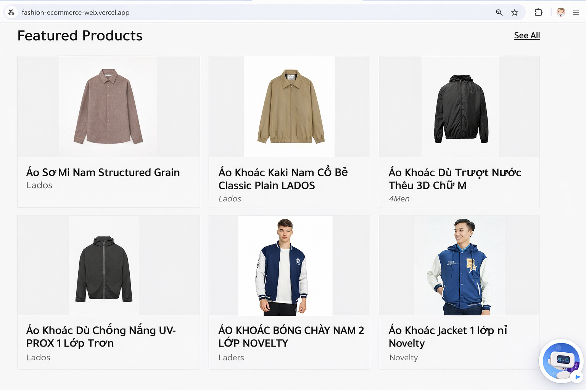
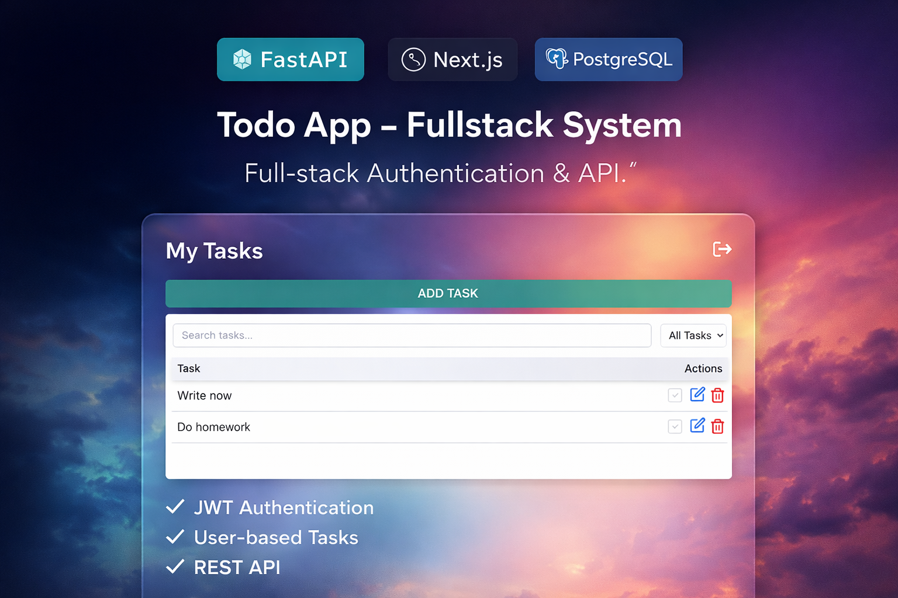

Data Engineering
- Apache Airflow, Kafka and Spark
- Web scraping (Selenium, BeautifulSoup)
- Docker
- ETL/ELT workflow design
Data Science Student | Seeking Data Engineer / AI Engineer Internship
Hi, I'm Trinh Quang Hien, a third-year Data Science student at the Industrial University of Ho Chi Minh City. I’m passionate about Data Engineering and AI, especially in building systems that turn data into meaningful insights.
I have experience with Python, SQL and tools like Apache Spark, Kafka, and Airflow. Through my projects, I’ve built data pipelines, worked with large-scale datasets, and developed ETL/ELT workflows for analytics and machine learning.
I’m interested in designing scalable data systems and applying AI to real-world problems, particularly in retail, supply chain, and e-commerce.
Short-term: Leverage data analytics, statistical modeling, and machine learning techniques to build efficient data workflows and intelligent solutions that support data-driven decision-making and deliver measurable business impact in a dynamic environment.
Long-term: Develop the capability to design and scale end-to-end data-driven systems, collaborate with cross-functional teams to drive innovation, and contribute to building robust data platforms that enable sustainable growth for organizations.
NovaHA
ACT4 Trading and Service
TEKY HOLDINGS

End-to-end churn prediction system using Databricks, Redis, and FastAPI, supporting real-time inference with MLflow and scalable model serving.

End-to-end banking data engineering project demonstrating CDC-based data ingestion, real-time streaming with Kafka, orchestration using Airflow, transformations with dbt, and analytics-ready storage in PostgreSQL.
Automated ETL pipeline that crawls TopCV data analyst jobs, cleans salary and location fields, and loads data into PostgreSQL for further analysis and dashboarding.

Modern full-stack e-commerce web app with AI chat assistant, built using React and Firebase, supporting product management, search, and secure checkout.

Full-stack todo application with JWT authentication, user-specific task management, and RESTful API built using FastAPI, Next.js, and PostgreSQL.